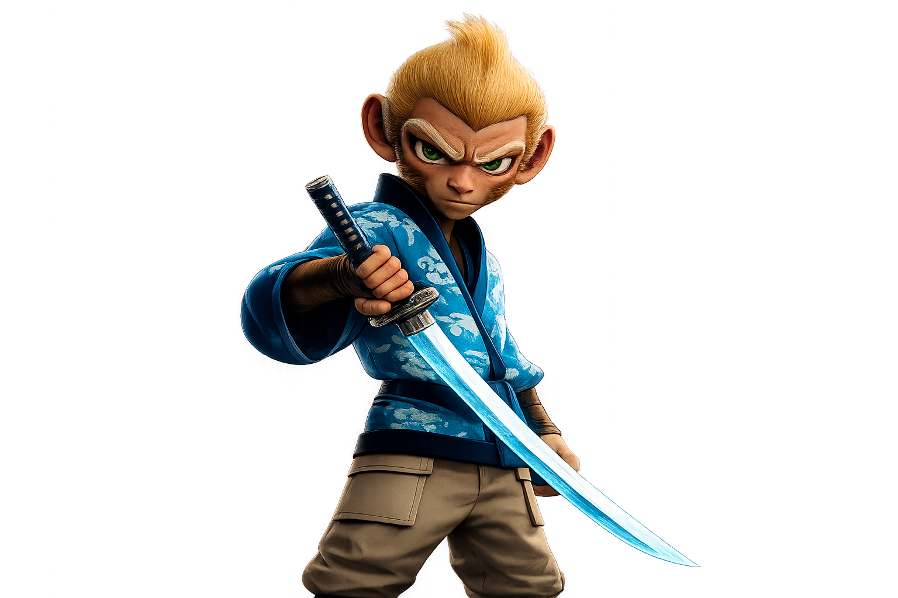

Join the Mystic Adventure
SHINSEI VILLAGE
Genuine Storytelling Project

VISION
Shinsei Village is a collection featuring 1,200 demigod monkeys, unraveling a mysterious case to save their village. The project is not just a PFP collection, but a fascinating on-chain storyline. Through a focus on community engagement, the project seeks to build the new era of Web3 entertainment.
Each stage of development is aimed to deliver the adventure experience to the community, as well as provides rewards and benefits for all holders. Solve weekly puzzles to open mystic boxes and collect $CLUE! Uncovering the plot is entirely up to the vote and decisions of the community.